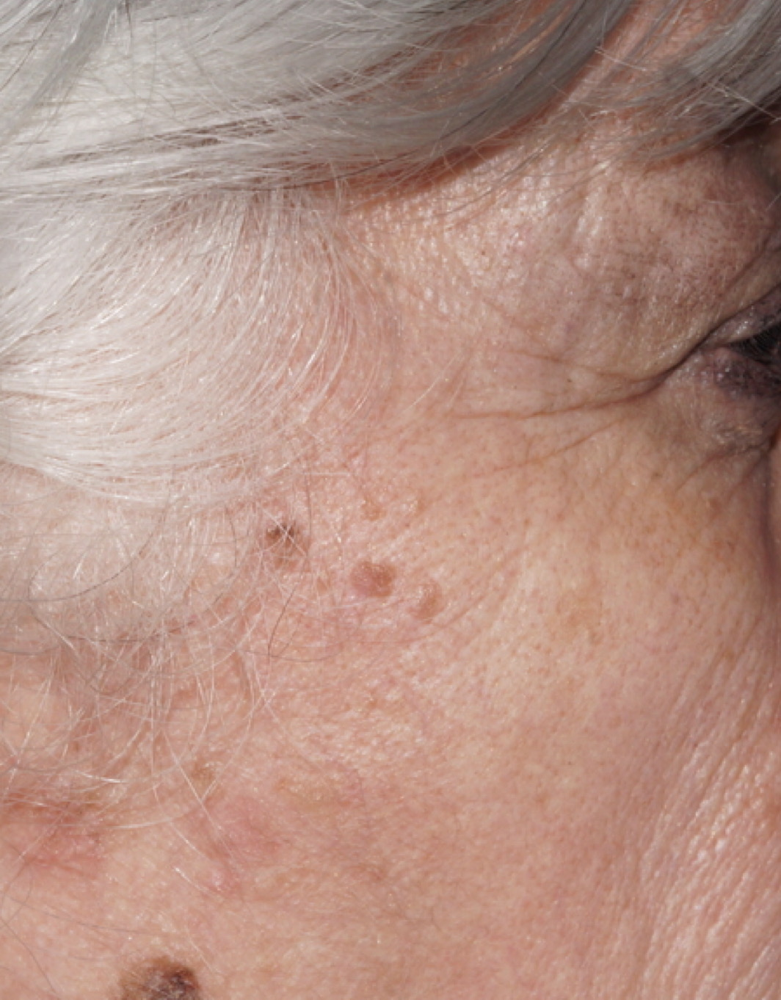
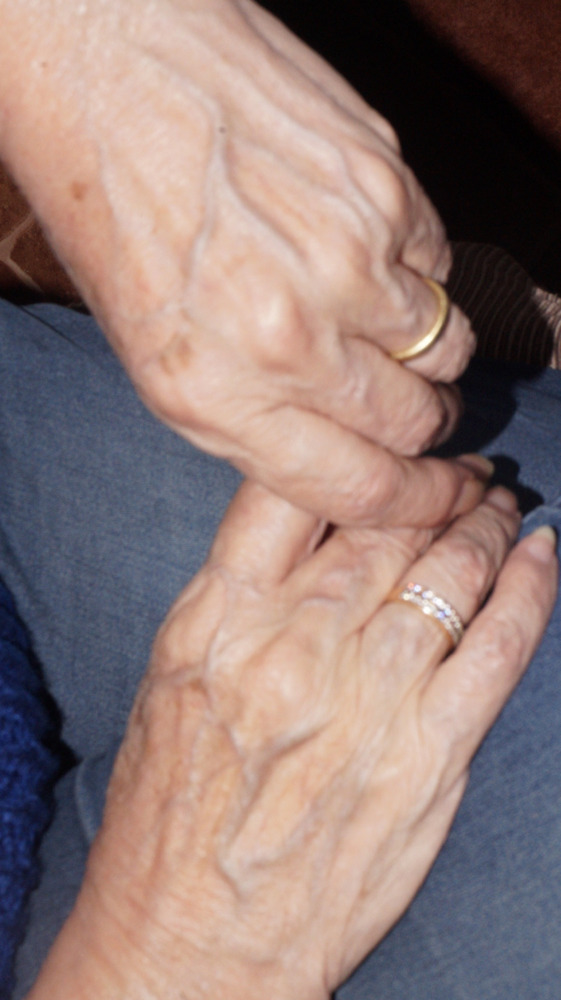

Ser Mujer
No pretendo decir que es ser mujer, nunca he logrado entender como deberia ser.
Pero si puedo decir que soy mujer.
Que he sido niña, joven, adolescente, mujer.

ManosPies
¿Como ser hija? Madre, amiga, novia, esposa, cuerpo, pechos, manos, pies.

Madre
¿Como ser hija? Madre, amiga, novia, esposa, cuerpo, pechos, manos, pies.